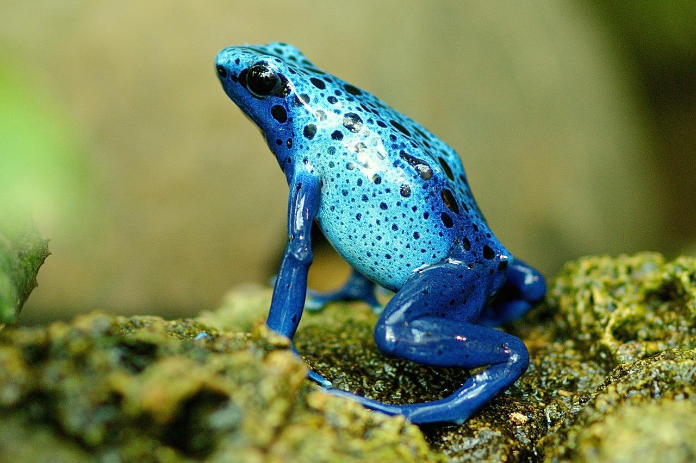

They have friends everywhere. They eat them, sometimes.Frogs can feel weather ! They don't really care about it, though.

They can be blue ! Yes, it's a quality.Or orange ! But be careful, some are poisonous.
"I am no pet, I am an accomplished swordsman, green as I may appear. "
- Frog, a famous heroic...well, frog.
It's time to get your personal frog ! Sign up to become a lucky frog owner by clicking that button right over here!